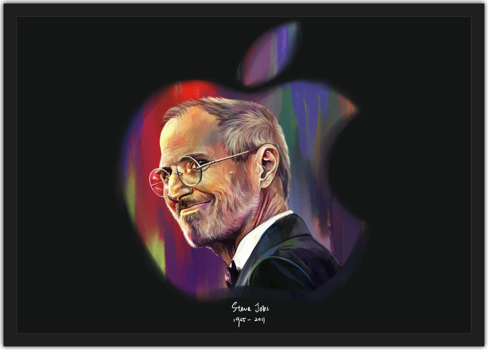

Steve Jobs (1955-2011) foi um empresário norte-americano, fundou a Apple. Criou o "Macintosh", o "iPod", o "iPhone" e o "iPad". A Apple revolucionou a indústria de computadores pessoais, os filmes de animação, o mundo da música e dos telefones celulares.
Fundador da Apple, ele foi responsável por popularizar o computador pessoal e por inovações nas áreas de telefonia, publicação digital e filmes de animação. Entre as principais criações de Jobs estão o computador Macintosh (1984), o tocador de música iPod (2001), o smartphone iPhone (2007) e o iPad (2010).
A família morava em Mountain View, na Califórnia, dentro da área que mais tarde se tornaria conhecida como Vale do Silício. Ainda pequeno, viu seu pai montar e desmontar aparelhos eletrônicos na garagem da família. Depois do curso básico, Jobs cursou a Homestead High School entre 1968 e 1972.
